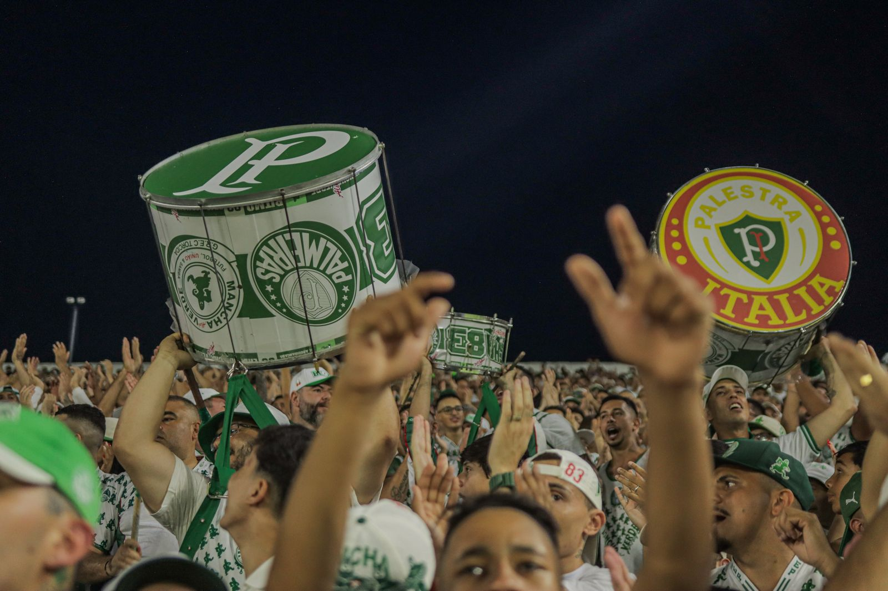
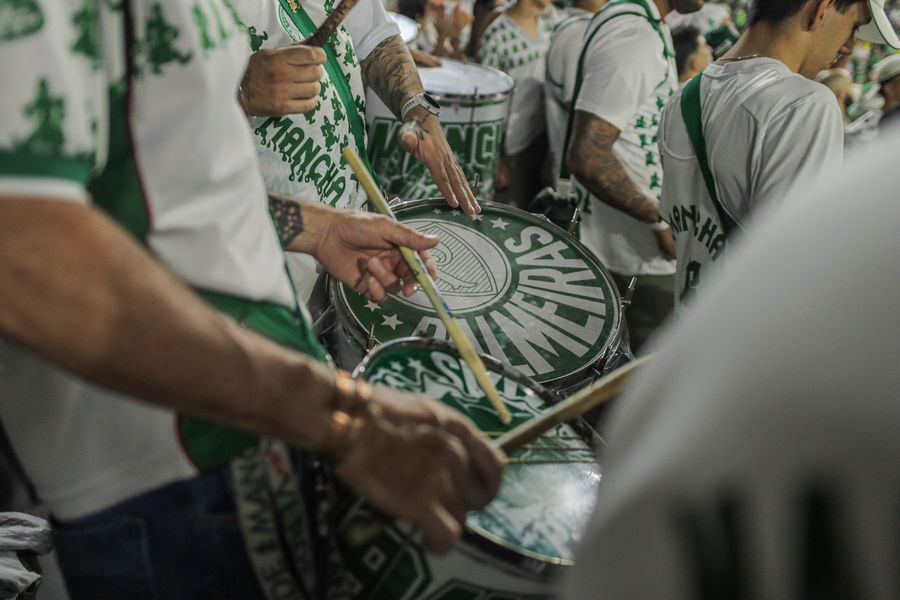
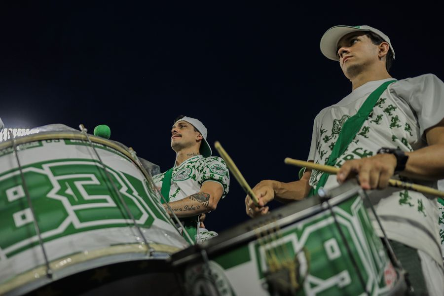

Desde
1983
Aqui se aprende a amar o Palmeiras. Futebol, União & Samba desde 11 de janeiro de 1983.
Futebol
Em casa e fora, na caravana e na arquibancada. texto a validar
União
Uma família que atravessa gerações, da quadra ao estádio. texto a validar
Samba
A escola de samba e a bateria que levam o verde para a avenida. texto a validar
Linha do tempo
A nossa história
- 1983
Fundação da Mancha Alvi Verde, em 11 de janeiro.
- Ano
Marco da torcida (a escrever com a diretoria)
- Ano
Marco da escola de samba
- 2026
43 anos e a nova loja oficial online.



Comprou aqui, fortaleceu a Mancha
- Produto oficial, com os símbolos e a padronização da torcida.
- Envio para todo o Brasil e motoboy em São Paulo.
- Para onde vai a renda da loja (validar com a diretoria).
- Retire também na sede: Rua Palestra Itália, 203 · São Paulo. confirmar